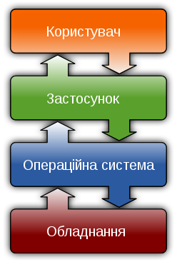
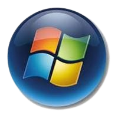

Операційна Система - це базовий комплекс програм, що виконує керування апаратною складовою комп'ютера або віртуальної машини; забезпечує керування обчислювальним процесом і організовує взаємодію з користувачем. Операційна система звичайно складається з ядра операційної системи та базового набору прикладних програм.
 
1. Запуск програм: ОС забезпечує завантаження та виконання програм
2. Управління оперативною пам’яттю: ОС розподіляє та керує
оперативною пам’яттю між процесами
3. Управління пристроями комп’ютера: ОС керує всіма пристроями
введення-виведення
4. Управління зовнішньою пам’яттю: ОС керує доступом до даних на
жорстких дисках та інших носіях
5. Управління завданнями: ОС керує процесами, які виконуються на
комп’ютері
6. Обробка команд: ОС обробляє команди, введені користувачем через
інтерфейс
• Мережеві операції: Підтримка стеку мережевих протоколів для
забезпечення мережевого зв’язку
• Безпека: Захист системи та даних користувача від несанкціонованого
доступу
• Багатозадачність: Паралельне або псевдопаралельне
виконання декількох задач
• Взаємодія між процесами: Синхронізація та обмін даними між
процесами
• Багатокористувацький режим: Розподілення прав доступу між різними
користувачами системи
Перші комп'ютери взагалі не мали ОС. На початку 1960-х вони лише комплектувались набором інструментів для розробки, планування та виконання завдань. Серед інших можна виділити системи від Remington Rand (UNIVAC) та Control Data Corporation. До кінця 1960-х, проте, було розроблено цілий ряд операційних систем, в котрих були реалізовані всі або більшість з вищеперелічених функцій. До них можна віднести «Atlas» (Манчестерський університет), «CTTS» та «ITSS» (Массачусетський технологічний інститут (MIT)), «THE» (Технічний університет Ейндговена), «RS4000» (Оргуський університет) та інші (на той момент їх налічувалось близько сотні). Найбільш розвинуті ОС того часу, такі як OS/360 (компанія IBM), SCOPE (компанія CDC) та завершений вже в 1970-х роках MULTICS (МТІ та компанія Bell Labs), передбачали можливість використання багатопроцесорних системи. Спонтанний характер розробки ОС призвів до наростання кризових явищ, пов'язаних, перш за все, зі складністю та великими розмірами розроблюваних систем. ОС погано масштабувались (простіші не використовували всіх можливостей потужних обчислювальних машин; складніші неоптимально виконувались або взагалі не виконувались на менш потужних системах) і були повністю несумісними між собою. У 1969 році співробітники МТІ Кен Томпсон, Деніс Рітчі та Браян Керніган з колегами розробили та реалізували ОС UNIX (первинно «UNICS», на противагу «MULTICS»). Нова ОС увібрала в себе багато рис попередниць, але на противагу їм мала цілий ряд переваг: проста метафорика (два ключових поняття — процес та файл); компонентна архітектура (принцип «одна програма — одна функція», або інакше «кожна програма має робити лише одну роботу, але робити її добре» плюс потужні засоби об'єднання цих програм для розв'язання конкретних задач); мінімізація ядра та кількості системних викликів; незалежність від апаратної архітектури і реалізація на машинно незалежній мові програмування (для цього була розроблена мова програмування «C»); уніфікація файлів (будь-що у системі є файлом, до якого можна доступитись за спільними для всіх правилами). Завдяки зручності перш за все як інструментального середовища Unix дуже тепло зустріли в університетах, а потім і в галузі в цілому і незабаром вона стала прототипом єдиної ОС, котру можна було використовувати у найрізноманітніших обчислювальних системах, і — більше того — швидко та з мінімумом зусиль перенести на іншу апаратну архітектуру. Наприкінці 1970-х років співробітники Каліфорнійського університету в Берклі внесли ряд суттєвих вдосконалень у джерельні коди Unix, включно з реалізацією стеку мережевих протоколів TCP/IP. Їх розробка стала відомою під іменем BSD (Berkeley Software Distribution). Через конфлікт з Bell Labs Річард Столмен поставив задачу реалізувати повністю незалежну від авторських прав ОС на основі ідей Unix, заснувавши проєкт GNU (GNU's Not Unix). Незабаром Unix стала стандартом де-факто, а потім і юридичним — ISO/IEC 9945. ОС, що дотримувались цього стандарту чи опираються на нього, називають «відкритими» або «стандартними». До них належать системи, що базуються на останній версії Unix, випущеній Bell Labs (UNIX System V), на розробках Університету Берклі (FreeBSD, OpenBSD, NetBSD), а також ОС Linux, розроблена спільнотою на чолі з Лінусом Торвальдсом та в межах проєкту GNU (основні системні інструменти). В 2023 році, з метою знизити залежність від технологій США, в Китаї було розроблено першу національну операційну систему з відкритим кодом, яка отримала назву OpenKylin. Згідно повідомлення агентства Reuters, нова операційна система заснована на Linux та підтримується спільнотою з 4000 розробників. ЇЇ можна використовувати на комп'ютерах та планшетах з архітектурами x86, ARM та RISC-V. Платформа використовуватиметься у китайській космічній програмі, а також у фінансовій та енергетичній галузях країни.
(відео доступне в YouTube)
1. За ядром:
• Монолітні: Мають велике ядро з багатьма вбудованими функціями.
• Мікроядерні: Ядро містить лише найнеобхідніші функції, а решта
реалізована у вигляді окремих процесів.
• Гібридні: Поєднують елементи монолітних та мікроядерних систем.
2. За багатозадачнiстю:
• Однозадачні: Можуть виконувати лише одну задачу за раз.
• Багатозадачні: Дозволяють виконувати кілька задач одночасно.
3. За використанням:
• Загальне призначення: Призначені для широкого спектру завдань.
• Спеціалізовані: Розроблені для конкретних завдань або обладнання.
4. За мережею:
• Мережеві: Мають вбудовані функції для роботи в мережі.
• Немережеві: Не мають спеціалізованих мережевих функцій.
• IBM: BESYS, IBSYS, SHARE Operating System, DOS/360, OS/360 і
похідні, CP/CMS
• Burroughs: Burroughs MCP
• UNIVAC: EXEC I / II / 8
• Compatible Time-Sharing System (CTSS), розроблена в MIT
• Incompatible Timesharing System (розроблена в MIT для мейнфреймів
DEC PDP-10 / 20)
• Операційна система THE (розроблена Едсгером Дейкстрою та іншими)
• Multics (проєкт Bell Labs, GE, і MIT)
• Master programme розроблена Leo Computers, Leo III в 1962
• СРСР: ОС Дубна (для ВЕЛМ-6)
• IBM: OS/390, OS/400
• Cray: UniCOS
• SGI: IRIX
• DEC / Compaq: Digital Unix / Tru64
• eComStation (різновид OS/2 Warp 4)
• NeXTSTEP, OPENSTEP
• Symbian OS
• Palm OS
• WebOS
• IBM: z/VM, z/OS, z/VSE, TPF, CICS, IBM i
• Fujitsu, Siemens: BS2000, BS3000, VM2000
• Oracle: Solaris
• Microsoft: Windows (XP, Vista, 7, 8, 8.1, 10, 11), Windows Server
• Apple: MacOS X / OS X: 10.0, 10.1, 10.2...., Mountain Lion,
Mavericks, MacOS Server
• Linux
• BSD: 386BSD, FreeBSD...
• OpenSolaris
• Apple Darwin
• GNU Hurd
• FreeDOS
• Illumos
• Google: Android, Fuchsia
• Apple: iOS
• Microsoft: Windows IoT
• Samsung: Tizen, Bada
• Blackberry: BlackBerry OS
• Firefox OS
у списку далеко не всi ОС
• Стабільність: Багато старих систем відомі своєю надійністю та
стабільністю
• Сумісність: Вони часто краще сумісні зі старим обладнанням та
програмами
• Простота: Менш складні інтерфейси, які можуть бути зрозумілішими
для деяких користувачів
• Обмежені функції: Вони можуть не мати сучасних функцій та
можливостей
• Відсутність підтримки: Більше не отримують оновлень безпеки або
технічної підтримки
• Сумісність з новими програмами: Можуть виникати проблеми з
запуском новітніх програм
• Сучасні функції: Включають останні технологічні розробки та
інновації
• Безпека: Регулярно оновлюються, щоб захистити користувачів від
нових загроз
• Краща сумісність: Підтримують новітнє обладнання та програмне
забезпечення
• Вимоги до обладнання: Можуть вимагати більш потужного обладнання
для ефективної роботи
• Складність: Іноді можуть бути перевантажені функціями, які
ускладнюють використання
• Приватність: Часто збирають більше даних про користувачів, що може
викликати занепокоєння щодо приватності
• Основні функції: Обидва типи ОС виконують основні функції, такі як
управління файлами, процесами, пам’яттю та периферійними пристроями
• Інтерфейс командного рядка: Більшість ОС, незалежно від віку,
пропонують доступ до командного рядка для виконання завдань
• Програмування: Старі та нові ОС підтримують розробку та виконання
програмного забезпечення, хоча інструменти та мови програмування
можуть відрізнятися
• Інтерфейс користувача: Нові ОС часто мають більш сучасний та
інтуїтивний інтерфейс порівняно зі старими, які можуть мати
застарілий вигляд
• Функціональність: Сучасні ОС включають новітні технології та
функції, такі як підтримка сенсорних екранів, віртуалізація, та
інтеграція з хмарними сервісами
• Безпека: Нові ОС зазвичай мають кращі засоби безпеки та регулярно
отримують оновлення для захисту від новітніх загроз, в той час як
старі ОС можуть бути вразливими через відсутність підтримки
• Сумісність: Старі ОС можуть мати проблеми з сумісністю з новим
обладнанням та програмами, тоді як нові ОС розробляються з
урахуванням сучасних стандартів
За не довгий вiдрiзок часу було зроблено дуже багато операційних Систем для рiзних цiлей, вiд звичайного серфiнгу iнтернету, до комп'ютерiзацiї всiх напрямок. Операційні Системи розвилали довго, та прийшли к тому, де ми зараз. Кожна система унiкальна по-своєму, отже кожна людина вибирає систему по своїм цiлям, бажанням i так далi.